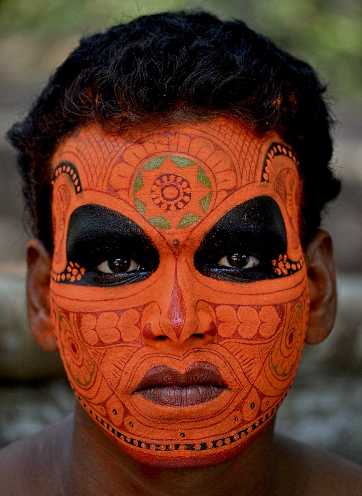
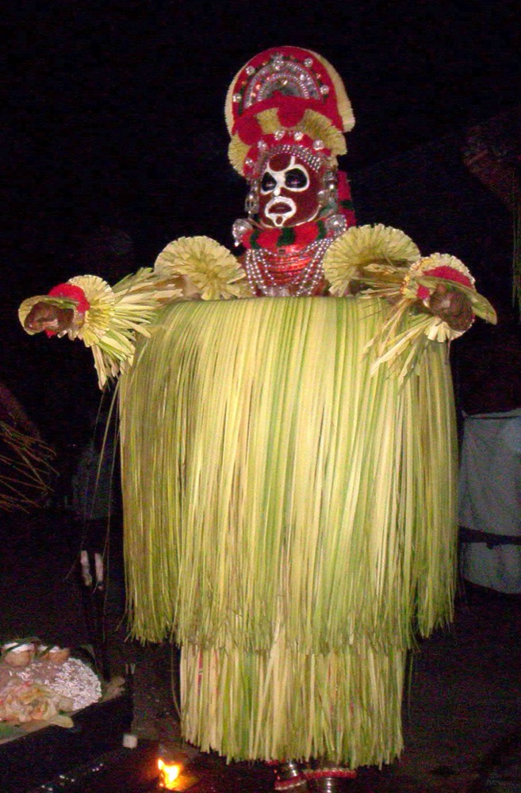
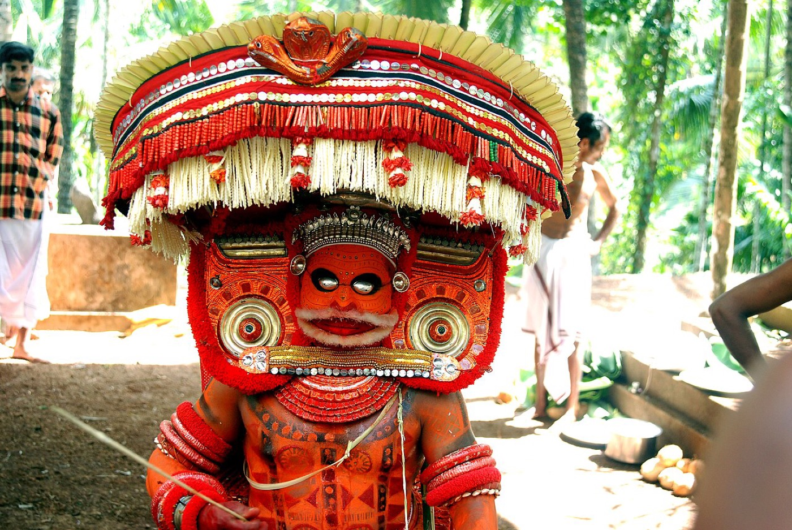

Geführte Theyyam-Reisen · Nord-Malabar, Kerala
Ein lebendiges Ritual, mit Respekt geteilt.
Kleingruppenreisen zu Keralas ältestem lebendigen Ritual, ganz nach Ihren Wünschen geplant. Auf Wunsch mit lokalem Guide, der Türen öffnet, jeden Schritt erklärt und dafür sorgt, dass Sie willkommen sind.
Mit Herz gemacht in Nord-Malabar, Kerala · Powered by letsgoforacamp
Verwurzelt in Nord-Malabar
Geführt von Einheimischen aus Nord-Malabar. Gastfreundschaft wie in der Familie.
Wir sind ein Team von Einheimischen aus Kannur und ganz Nord-Malabar. Nach acht Jahren Zusammenarbeit mit den Familien und Dörfern dieser Region wissen wir, wen man fragt, wann man zurücktritt und wie sich Gäste willkommen fühlen.
Lokal, nicht ausgelagert
Unser Team und jeder Guide oder Fahrer, den wir vermitteln, stammen aus Nord-Malabar. Niemand liest Ihnen einen Text vor.
Den Familien bekannt
Vorstellungen laufen über Menschen, denen die Familien vertrauen. So sind Sie willkommen und nicht nur geduldet.
Ein echter Mensch antwortet
Kein Online-Checkout und kein Callcenter. Unser Team in Nord-Malabar antwortet innerhalb von zwei Werktagen und ist nach der Buchung rund um die Uhr erreichbar.
Wir schützen das Ritual
Wir veröffentlichen nie Termine oder Orte von Ritualen, weisen jeden Gast in die Etikette ein und befolgen die Fotoregeln jedes Schreins.
- LetsGoForACamp Travel and Innovation LLP
- [TOURISM REGISTRATION NO.]
- [GOOGLE RATING · REVIEW COUNT]
- [MEMBER OF TOURISM ASSOCIATION]
Zwei Arten zu reisen
Gruppe anschließen oder ganz individuell
Kleingruppen-Termine
Teilen Sie die Reise mit bis zu 8 Gleichgesinnten. Reisezeiträume nennen wir Ihnen auf Anfrage.
Gruppenreise anfragenPrivat und individuell
Eigene Termine, eigenes Tempo, eigene Interessen, für Familie, Freunde, eine Interessengruppe oder Einzelreisende. Wir planen gemeinsam mit Ihnen.
Individuelle Reise anfragenWarum mit uns
Warum mit uns: Das Ritual ist Gottesdienst, und wir helfen Ihnen, ein guter Gast zu sein
Zugang, vermittelt
Rituale finden in Familienschreinen und auf Dorfplätzen statt. Wir kümmern uns um Vorstellung und Zeitpunkt, damit Sie willkommen sind und nicht im Weg stehen.
Ein lokaler Guide, wenn Sie möchten
Optional. Erfahren Sie, wer die Gottheit ist, was die Geschichte bedeutet und wann man nähertritt oder sich zurückhält.
Alles organisiert
Nächtliche Rituale und Landstraßen sind allein schwierig. Wir kümmern uns um Unterkunft, Transfers, Mahlzeiten und die späte Heimfahrt.

Neu hier?
Was ist Theyyam?
Ein lebendiges Ritual in Nord-Kerala, bei dem der Mensch, der das Kolam annimmt, nach Stunden des Bemalens und Ankleidens als Gottheit gilt. Es gibt Hunderte von Formen, jede mit eigener Tracht, eigenem Gesang und eigener Geschichte, seit Generationen von denselben Familien bewahrt.
Geführte Reisen
Geführte Theyyam-Reisen: Sie bestimmen, wie tief Sie eintauchen
Die genauen Rituale bestätigen wir vor der Zahlung mit Ihnen, denn sie hängen vom jeweiligen Tag ab.

Fünf Standorte. Eine Küste der Rituale.
Wir wohnen in komfortablen Städten und fahren abends zu den Ritualen, damit Sie gut schlafen und mehr erleben.
- Kannur · Weber, Strände, einfache Transfers
- Thalassery · Festungsstadt, Essen und Cricket
- Payyannur & Thaliparamba · das Kernland des Rituals
- Kanhangad · das Tor zum Norden
So funktioniert es
- 1
Erzählen Sie uns Ihren Plan
Monat, Gruppengröße, Interessen. Zwei Minuten.
- 2
Wir gestalten die Reise
Ein Vorschlag in zwei Werktagen.
- 3
Wir bestätigen die Rituale
Kurz vor der Reise legen wir die besten Nächte fest.
- 4
Sie kommen an, wir kümmern uns
Unterkunft und Transfers stehen bereit, auf Wunsch auch ein Guide.





“[REISEBERICHT: ein Satz darüber, was der Guide möglich gemacht hat]”
[Name], [Land] · Die Heritage-Reise
Fragen und Antworten
Wann ist die Theyyam-Saison?
Die Hauptsaison dauert von Ende Oktober bis Mai. Die besten Wochen nennen wir Ihnen bei Ihrer Anfrage.
Kann ich einfach allein hingehen?
Manche Rituale sind offen, viele sind aber Familienanlässe, und die Zeiten sind schwer zu erfahren. Ein lokaler Guide oder Gastgeber, der die Familie kennt, hilft Ihnen, respektvoll dabei zu sein.
Ist es für Kinder und ältere Menschen geeignet?
Ja, mit Planung. Rituale dauern bis spät in die Nacht und man steht viel, daher passen wir Tempo und Sitzplätze an.
Darf ich fotografieren oder filmen?
Nicht immer. Viele Schreine verbieten Foto und Video, manche während des gesamten Rituals. Die Regeln vor Ort erfahren Sie von uns oder Ihrem Guide, und wir empfehlen, einfach dabei zu sein.
Bereit, den Göttern Malabars zu begegnen?
Sagen Sie uns, wann Sie reisen können. Wir antworten innerhalb von zwei Werktagen.
Reise anfragen